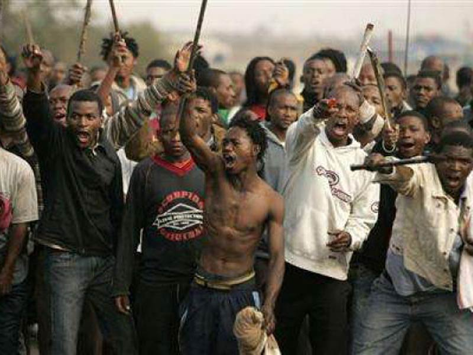

Violent Cults
Violent cults. Basically on the list of everybody's top fears, if you watch a lot of horror movies and television shows at least. Just the thought of an organized, devout group of humans, just like you and I, systematically exerting violence on themselves and/or others is just about as disturbing as it gets. Throughout history, cults and violence have been closely assimilated, due to the public cases and especially the portrayal in media and news outlets. Violent cults do not care about consequence. They are the extremists that will do whatever it takes to keep the ideas and beliefs of their groups alive, even if it means hurting or killing themselves. Makes a lot of sense, right? The only thing that is scarier than a violent cult is a violent cult in your neighborhood.
